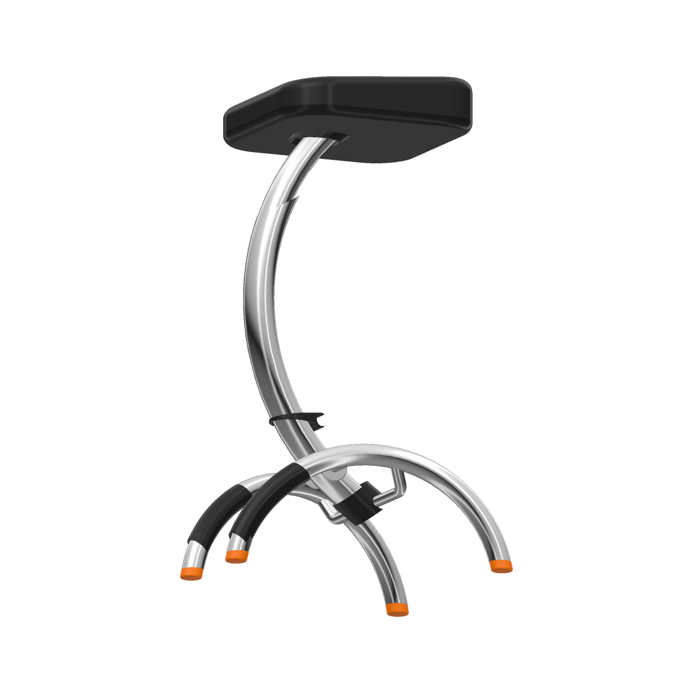
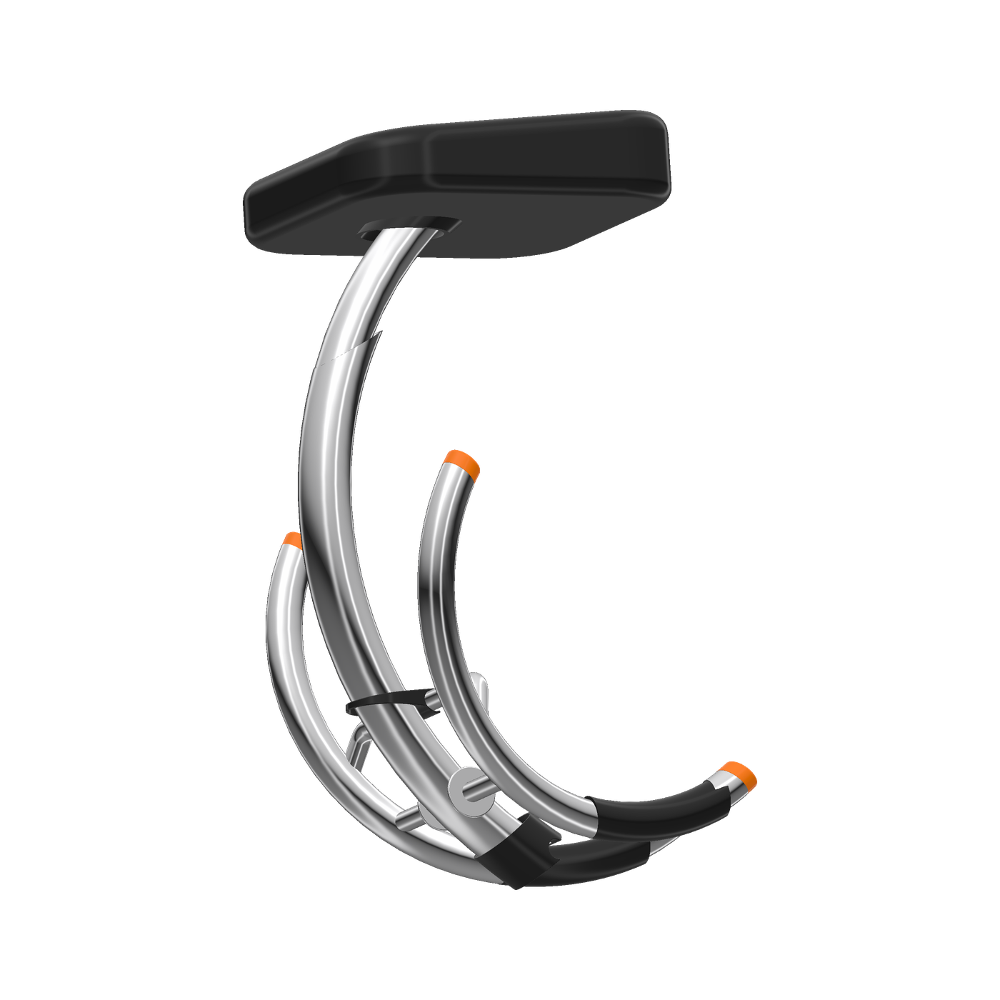

01
Desplegado

Preparando vista interactiva…Arrastrá para girar e inclinar · Usá la rueda para acercar
DISEÑO INDUSTRIAL · PROYECTO ACADÉMICO
Fotografía
deportiva


Materiales y piezas
Para construir la estructura principal del asiento, se utilizaron cuatro tubos de acero de distintos diámetros (45, 38 y 25,4 mm), todos con un espesor de 2 mm. Estos conforman la estructura resistente del producto.
Para vincular las diferentes partes, se incorporó una varilla de acero de 14 mm de diámetro, junto con tornillos que permiten realizar las uniones entre los componentes.
La base del asiento se realizó con una chapa de acero de 22 × 22 cm y 1,4 mm de espesor. Para mejorar la comodidad y la ergonomía, se diseñaron dos carcasas que recubren la chapa, generando una superficie de contacto más confortable para el usuario.
Por último, se incorporaron tapones de PLA naranja, fabricados mediante impresión 3D, en los extremos de las patas. Además, se diseñó un tapón estructural de encastre en PLA negro, también impreso en 3D, para resolver la unión entre las piezas.
Del tubo al objeto
Los tubos se trabajaron mediante un proceso de curvado en torta, con un radio de 270 mm. Para lograr un correcto encastre telescópico entre ambos, es necesario considerar que sus radios internos sean ligeramente diferentes, manteniendo el mismo eje de curvatura. Esto permite que un tubo se deslice dentro del otro de manera adecuada.
Los tubos que conforman las patas tienen un diámetro de una pulgada y un espesor de 2 mm. Estos también se curvaron mediante el proceso en torta, utilizando un radio de 120 mm.
Las varillas se cortaron a las medidas necesarias y se soldaron mediante el proceso MIG, asegurando la unión entre las diferentes piezas de la estructura.
La chapa que conforma la base del asiento se soldó mediante MIG al tubo superior de la estructura, logrando una unión resistente entre ambos componentes.
Una vez finalizadas todas las soldaduras, se realizó el pulido manual de la estructura metálica, utilizando lijas de diferentes grosores para mejorar el acabado superficial. Luego, se aplicó una laca transparente para proteger el material y conservar el color natural del acero.
Con la estructura metálica terminada, se continuó con la fabricación de los componentes complementarios mediante impresión 3D. Los tapones, las carcasas del asiento y las piezas de unión se modelaron previamente en Fusion 360 y luego se imprimieron en 3D, principalmente en PLA y TPU, según las necesidades de cada componente.
Por último, se incorporaron elementos antideslizantes en las zonas de contacto con el suelo. Estos permiten mejorar el agarre sobre distintas superficies y aportar mayor estabilidad y seguridad durante el uso del asiento.